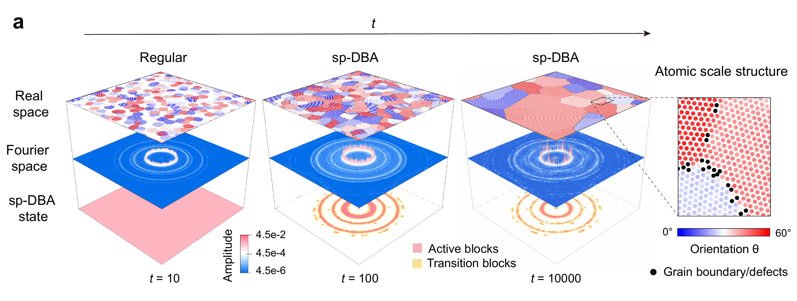
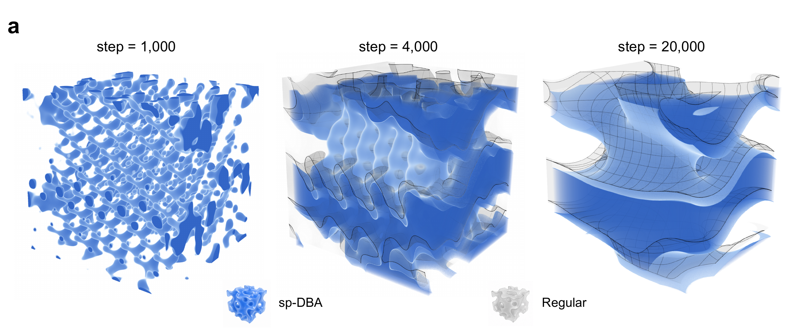
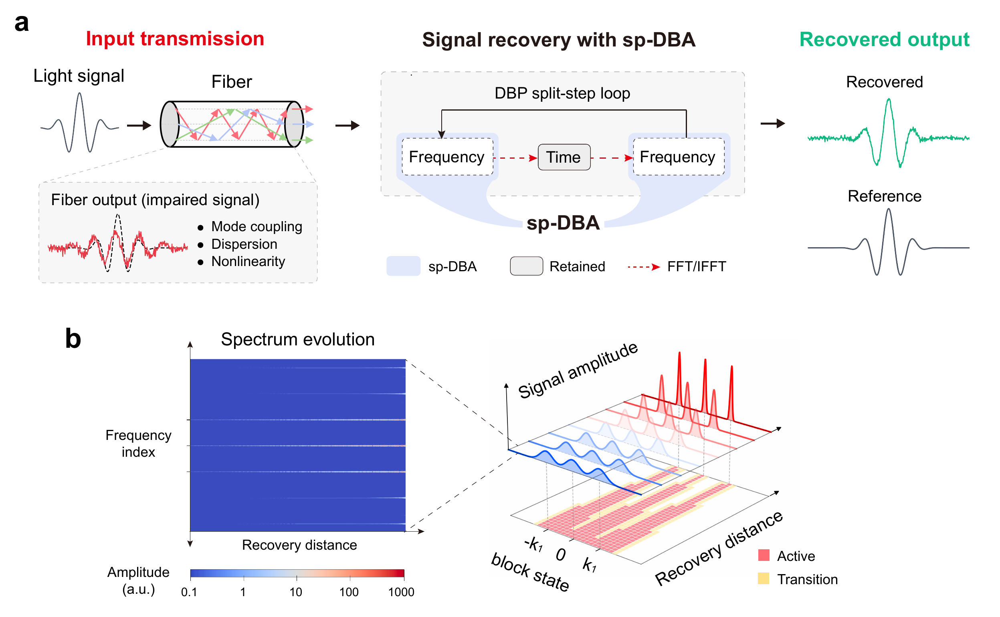
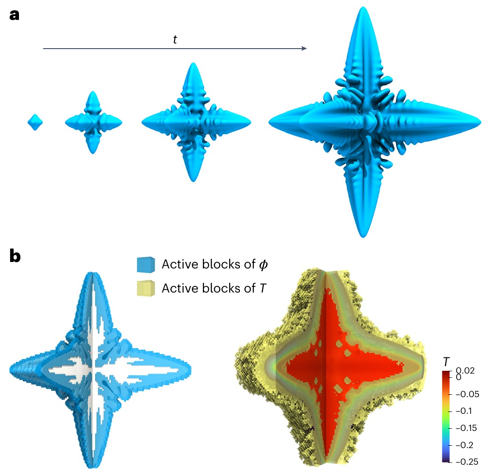

How sp-DBA fits into a solver
Dynamic block activation (DBA), developed by Ruoyao Zhang and Yang Xia, reduces repeated work by selectively updating GPU-aligned data blocks as a simulation evolves. sp-DBA builds on this idea for transform-domain workflows. We redesign block activation and coordinate it with the surrounding solver, where each Fourier mode affects the whole physical domain.
sp-DBA groups the transformed data into blocks and decides which need updates at the current step. Active blocks receive the usual update, transition blocks apply a weighted update increment, and frozen blocks keep their stored values. Periodic refresh runs a full update of all blocks. The full forward and inverse transforms still run.
Each data block maps to one CUDA thread block, whose threads follow the same update decision. Shared memory holds neighboring block states and smoothing weights for transition updates. A small adapter connects each solver to the shared framework, so the full-update Regular solver and sp-DBA reuse the same model-specific update routine.

Phase-field crystal models
Classical PFC describes a crystal as a continuous density field that forms a periodic lattice and evolves toward lower free energy.


Classical single-mode PFC model. ψ is the continuous atomic-density field and ℱ the free energy; the conserved dynamics evolve ψ toward lower free energy.
The equations above describe classical PFC. The example below uses its XPFC extension; the XPFC model details explain the different correlation kernel.
In my solver, local nonlinear terms are calculated in real space and the correlation term in Fourier space. I let the crystals form with all blocks active, then enabled adaptivity as the grains coarsened. The Fourier amplitudes concentrate around Bragg rings—ring-shaped features set by the lattice—so block energy identifies regions to update. I compared adaptive and full-update Regular runs using normalized grain-size distributions, free-energy evolution, and mean density.

Reaction–cross-diffusion
RCD models describe pattern formation when reacting components also influence one another’s diffusion.


Reaction–cross-diffusion model. u contains component concentrations, D couples their diffusion, and R(u) describes interactions between components, as in biological pattern formation and population dynamics.
I computed the diffusion matrix’s eigendecomposition once and reused it at each step to simplify the coupled update. sp-DBA then selects blocks using the combined Fourier amplitudes of all components, with one state shared across them. I checked the resulting patterns and radial structure factors against Regular. In the 48-component test, combining sp-DBA with eigendecomposition gave a 28.1× update-stage speedup over the direct-matrix Regular baseline.

Digital backpropagation
DBP works backward through a model of optical propagation to recover signals distorted during transmission through a multimode fiber.

The forward multimode nonlinear Schrödinger equation evolves optical envelopes E over distance z and retarded time t. Its terms give loss α, dispersion β₂, mode coupling K, and Kerr nonlinearity γ. I is the identity matrix. DBP approximates the inverse propagation.
I applied sp-DBA to the repeated linear updates in frequency space; the nonlinear correction still runs in the time domain. Total spectral power across all modes identifies the frequency bands to update. I checked signal recovery against the transmitted complex field using correlation and normalized mean-squared error. With controlled Gaussian wave packets, sp-DBA made the frequency-domain linear updates 21.3× faster than full-update Regular. The same test achieved an 8.4× overall speedup. This test used 32 coupled modes, 262,144 temporal samples, and a 10% target active-block ratio on one NVIDIA A800-SXM4 GPU.

Jingkun Jiang, Pingchuan Deng, and Yang Xia. sp-DBA: a general framework for adaptive transform-domain computation. arXiv (2026).
DBA · Prior work
In the dendritic-growth example below, most of the change occurs around the moving crystal boundary. Updating the nearly steady bulk at every step repeats much of the work. Ruoyao Zhang and Yang Xia developed DBA to make these decisions in GPU-aligned blocks, using shared memory to coordinate activation. It keeps a fixed grid, whereas adaptive mesh refinement changes spatial resolution. Their reported dendritic tests retained full-update morphology and tip-profile accuracy, with near-ideal scaling to 32 GPUs by overlapping computation and communication.
Ruoyao Zhang and Yang Xia. A dynamic block activation framework for continuum models. Nature Computational Science 5, 345–354 (2025).
